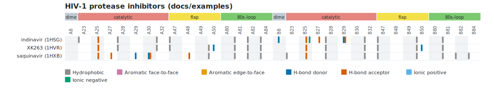

The fingerprint of a ligand describes one ligand. The interaction matrix puts the fingerprints of several ligands, of the same structure or of different ones, side by side on the same columns, so that they can be compared, clustered or given to a program: one row for each ligand, one column for each pocket position and interaction class, a cell that is 1 if the residue at that position makes at least one favorable interaction of that class with the ligand and 0 otherwise.
With the 85 positions of a KLIFS pocket and the 7 classes of the KLIFS interaction fingerprint this is a 595-bit fingerprint for each ligand, comparable across structures because the columns are the pocket positions and not residue numbers. The matrix is written as CSV, JSON or as a heat map in SVG, on the command line and in the graphical interface.
The ligands come from a list file: a TSV or CSV file with a header line and one line for each ligand.
# Interaction matrix of three HIV-1 protease inhibitors
structure ligand label
../../tests/data/1HSG.pdb MK1 indinavir (1HSG)
../../tests/data/1HVR.pdb XK2 XK263 (1HVR)
../../tests/data/1HXB.pdb ROC saquinavir (1HXB)
| Column | Meaning |
|---|---|
structure |
required: the PDB or mmCIF file (also called file, path, structure_file or pdb) |
ligand |
required: the residue name of the ligand (lig, resname, ligand_name) |
chain |
the chain of the ligand, to choose among several with the same name |
resseq |
the residue number, as on the command line: 201 (any insertion code), 201A (code A) or 201- (no code) (resi, residue, resnum, number) |
label |
the name of the row (name, id, entry); by default the file name and the ligand, for example 1HSG MK1 902B |
pocket |
the pocket definition of this structure (pocket_file, definition) |
altloc |
the alternate conformation to use for this structure (alt, conformation) |
"a, b"), a byte order mark and Windows line ends are accepted. Blank lines and lines that start with # are skipped.46, hinge.46...). Give a definition to
the whole list with --pocket FILE, or to each line with the pocket column; a line without one uses the common one. Either every line has a pocket
definition, or none does: otherwise the columns would not mean the same thing for every row, and the program says which line is the problem.ASN 10A, LYS 30A...). This is only meaningful if all the
structures have the same numbering, for example several ligands of the same protein; for different proteins use a pocket definition.For kinases the pocket definition of each structure can be made with KLIFS kinase pockets: one --klifs-* command for each structure, and its output in the
pocket column. Then position 20 is the same position in every row, whatever the residue number of the kinase.
| Option | Columns |
|---|---|
--matrix-classes klifs (default) |
the 7 classes of the KLIFS interaction fingerprint: hydrophobic, face_to_face, edge_to_face, hbond_donor, hbond_acceptor, ionic_positive, ionic_negative |
--matrix-classes all |
all the classes of the fingerprint: also cation_pi, halogen, metal and water_bridge |
--matrix-classes hydrophobic,hbond_donor |
the classes that you name, always in the order above |
hbond_donor and hbond_acceptor are named from the point of view of the protein residue: the residue donates, or accepts, the hydrogen. Only favorable interactions
count: clashes, repulsions and possible covalent bonds are ignored, as in the fingerprint. A cell is a bit: the number of contacts is not kept, the
fingerprint has it.
--matrix-hide-empty leaves out the positions where no ligand has any interaction (all the classes of the position).
CSV (--matrix-format csv, the default): the columns label, structure, ligand and then one column <position>:<class> for each position and class, in the order of the
positions and, in each one, of the classes; one line for each ligand, with 0 and 1. Values with a comma are quoted.
JSON (--matrix-format json):
{"classes": ["hydrophobic", "..."], "pocket": true,
"positions": [{"position": "1", "region": "hinge"}, ...],
"rows": [{"label": "...", "structure": "...", "ligand": "MK1 902B", "residues": ["ASN 10A", ...], "bits": [0, 1, ...]}],
"warnings": ["..."]}
bits is in the order of the CSV columns (the cell of position p and class c is bits[p * len(classes) + c]). residues has one entry for each position: the residue that the pocket
definition of that line names there (or the one in contact), and an empty text if its definition has no such position (with a KLIFS definition: a residue that is missing in the
crystal).

SVG (--matrix-format svg, with --matrix-title TEXT for a title): a heat map with one row for each ligand and, for each position, a block of one thin stripe for each class,
colored when the bit is set (the legend gives the colors). The regions of the pocket definition are drawn above the positions, with the colors of its @color lines. Hovering over a stripe
shows the ligand, the position, the class and the residue. The figure is self-contained (no external resources) and has a white background.
ligint --matrix LIST [--matrix-format csv|json|svg] [--matrix-classes klifs|all|NAMES] [--matrix-hide-empty] [--matrix-title TEXT] [--pocket FILE]
ligint --matrix docs/examples/hiv-protease-matrix.tsv --pocket docs/examples/hiv-protease-pocket.tsv > matrix.csv
ligint --matrix docs/examples/hiv-protease-matrix.tsv --pocket docs/examples/hiv-protease-pocket.tsv --matrix-format svg --matrix-title "HIV-1 protease inhibitors" > matrix.svg
The matrix is written to the standard output; the warnings go to the standard error. The thresholds and the options of the analysis (--hb-max, --plip-like, --no-water, --altloc, --format, --sdf...) apply to
every row. --matrix takes no structure on the command line, and it cannot be combined with --fingerprint, --csv, --download-pdb or --klifs-*. An error in the list or in an entry
stops the program with exit code 1 and the message Matrix: Entry N (line L, label): ...; nothing is written to the standard output.
The Matrix tab (and File > Open ligand list for the matrix...) opens a list, Compute matrix builds it in the background with the settings of the left panel and the pocket
definition that is loaded (it is the common one: put the others in the pocket column), and shows the heat map (with Qt Svg) and a table with the interactions and positions of each row. All
interaction classes and Hide positions without interactions are the options --matrix-classes all and --matrix-hide-empty. File > Export matrix... writes SVG, CSV or JSON by extension, and File > Copy matrix command line gives the ligint --matrix ... command that reproduces it.
#include <ligint/matrix.hpp>
auto entries = ligint::readMatrixList("ligands.tsv");
ligint::MatrixOptions opt;
opt.pocket = "pocket.tsv"; // optional: the common pocket definition
ligint::InteractionMatrix m = ligint::makeMatrix(entries, opt);
bool set = m.bit(row, position, cls); // one cell
ligint::writeMatrixCsv(std::cout, m); // or writeMatrixJson, matrixSvg
The tests check, without a network: the list (formats, aliases, quoting, paths, every error with its line), the classes, the matrix with and without pocket definitions, the merge of different definitions in either order, the selection of one ligand, the warnings, the three outputs (the JSON bits equal the CSV cells; the SVG is well-formed and has one stripe for each bit set), that each row agrees with the fingerprint of the same ligand computed separately (also on the three HIV protease complexes), and corrupted lists.
ligint 0.9.0 manual